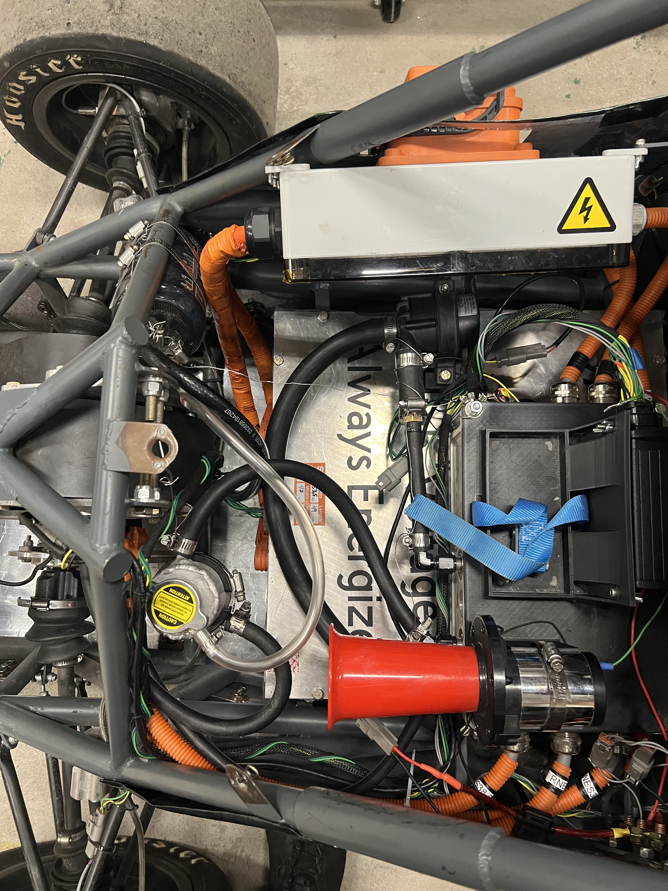
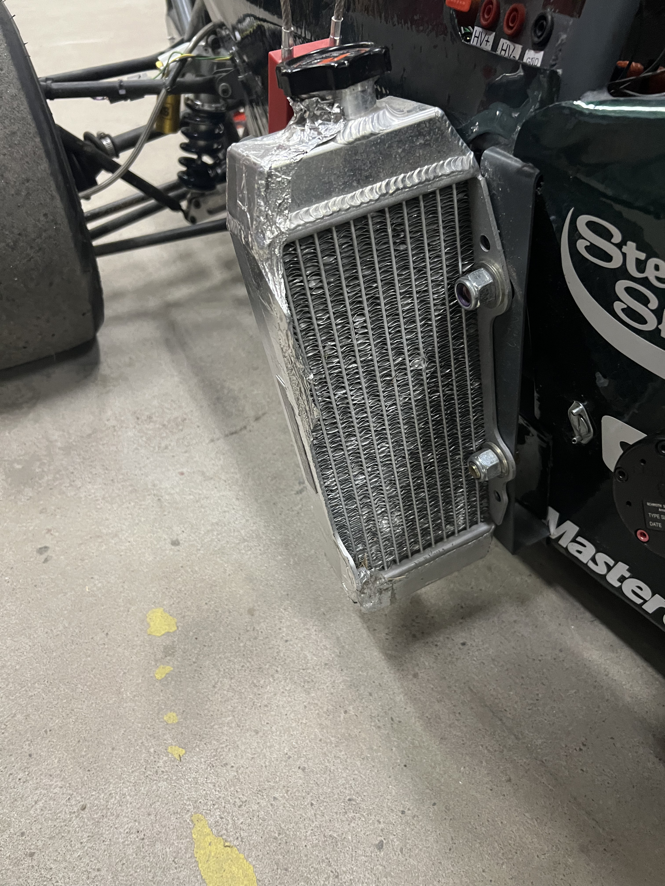
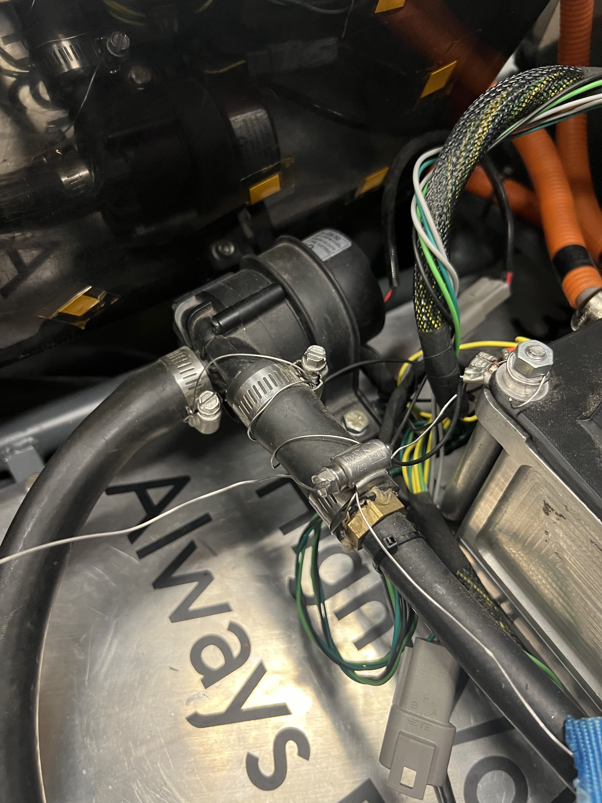
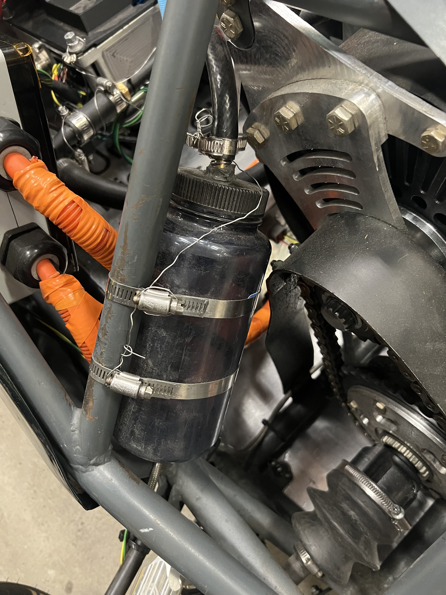

CL · 08
CL · 08
The liquid loop that keeps the motor and motor controller in their temperature window.
The Cooling subteam owns the car's liquid loop — the radiator, the pump, the swirl pot, the hoses that connect them, and the catch can on the end of it. The scope is deliberately narrow. The loop cools the motor controller and the motor, and nothing else on the car runs on it.
One circuit serves two components. The pump moves coolant through the motor controller and the motor, out to the radiator where the heat leaves the car, and back around. Most of the work is packaging. The loop has to thread past high-voltage cabling, the drivetrain, and the chassis tubes without kinking a hose or blocking access to anything behind it.

The swirl pot at the top of this page is completely designed and manufactured in house, welded up from aluminum and fitted with a pressure cap. It gives air entrained in the coolant somewhere to separate out instead of circulating back through the motor and the controller, and it is where the loop gets filled and where it vents when pressure climbs.
Around the pot sit the three parts that do the rest of the work: the radiator hanging outboard in the airflow, the pump that keeps coolant moving regardless of how fast the car happens to be going, and the catch can that takes whatever the pressure cap releases.



The battery pack is not plumbed into any of this. It is cooled completely passively, with no coolant, no pump, and no forced air, which keeps a large amount of plumbing, mass, and failure modes out of the accumulator entirely. It also means the pack's thermal behavior has to be right by design rather than corrected by a pump after the fact.
For the next pack, that decision is being checked rather than assumed. The team is running Ansys thermal simulations of the new accumulator to confirm that the thermals will be appropriately managed before anything gets built, so that staying passive is a result the numbers support rather than a gamble on the pack running cool enough.